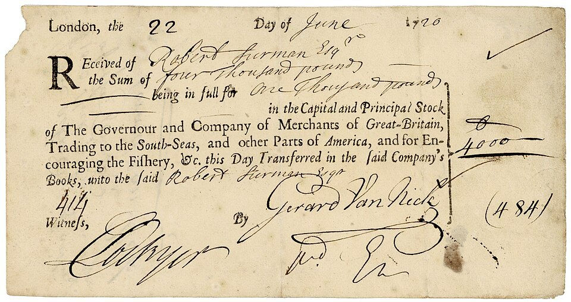

FILE FCP-01 HISTORICAL CASE FILE
The South Sea Bubble and the 1720 debt conversion
ASSESSMENT: Political favoritism and insider abuse are strongly evidenced; a unified plot explaining the whole bubble is not.
Documented findings, economic interpretation and unresolved claims are assessed separately.

Claim under review
The question is whether company directors and ministers manipulated public-debt conversion and political access to inflate South Sea shares before collapse.
The company’s conversion proposal linked public debt, subscriptions and share prices, while directors and political figures had incentives to influence terms. Parliamentary evidence of bribes and insider transfers is concrete, but the subscription scheme’s long-run viability and changing market expectations also shaped prices.
Context and timeline
The 1719–20 plan exchanged state debt for company stock; subscriptions, patronage and rising prices preceded a collapse. Parliament investigated, confiscated some estates and revised finance rules.
The Commons inquiry was conducted after the crash amid public demand for accountability and punishment. Its findings are valuable for transactions it traced, but its political setting and limited accounting do not make it a neutral econometric explanation of the boom.
Primary records and formal findings
The 1721 Commons committee documented insider dealings, bribery and irregular transfers, but did not identify a single plan explaining all prices or losses.
Price quotations, subscription books and government debt balances allow the bubble’s sequence to be reconstructed. A unified fraud theory should identify a specific false representation, its date and the transactions it induced, rather than rely on the eventual collapse.
Independent economic evidence
Larry Neal reconstructs prices, company accounts and debt conversion; leverage and expectations magnified favoritism and fragile valuations.
Parliament documented serious insider abuses, but the bubble’s full price path also involved debt conversion, liquidity and expectations. A specific fraud claim needs a dated misstatement linked to investor action.
Counter-evidence and limitations
Some insiders abused their positions, but the crash does not prove every promoter knowingly deceived investors. Newton’s supposed total ruin is exaggerated; prices also reflected liquidity and subscription risk.
Falsifiable checks and assessment
Compare dated communications, subscriptions, share quotations and debt ledgers; establish whether false statements preceded particular purchases and whether investors received contrary disclosures.
Assessment: Political favoritism and insider abuse are strongly evidenced; a unified plot explaining the whole bubble is not.
Sources and evidentiary notes
- House of Commons, Report from the Committee of Secrecy (1721)Parliamentary inquiry documents director transactions and political payments, but is not a complete account of market causation.
- Larry Neal, The Financial Crisis of 1720 (Yale University Press, 1990)Academic reconstruction uses prices and company accounts and supports a multifactor explanation. It addresses this episode but cannot alone resolve the broader causal question.
- P. G. M. Dickson, The Financial Revolution in England (1967)Archival institutional history explains public-credit context, not every allegation about individuals.
Historical research only; not investment or legal advice.